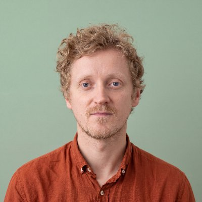

Weeks 1–2
First, invent a character.
Dream up its appearance, personality, powers, and home. Sketch it, describe it, and experiment with AI-generated images until it feels like the character they imagined.
At Candide, children learn to create with AI by inventing a character, writing its adventure, and bringing it to life in a short movie trailer. They make, experiment, share ideas, fail and succeed, with educators guiding them along the way.
 Play the video: Candide, where you learn AI the fun way
Play the video: Candide, where you learn AI the fun way
What they’ll create
A friendly monster that lives on the moon? A tiny dragon afraid of heights?
Your child starts with an idea of their own. Each week, they build on it—until they have a character, an illustrated adventure, and a trailer to share with you.
Dream up its appearance, personality, powers, and home. Sketch it, describe it, and experiment with AI-generated images until it feels like the character they imagined.
Give their character a problem to solve and a story worth telling. Plan the plot, write the scenes, and create illustrations that bring the adventure to life.
Choose the most exciting moments, arrange the scenes, and add narration. Turn their story into a short trailer for their imaginary world.
Your child presents what they’ve made, shows how it developed, and explains the choices behind it.
What they’ll learn
Every project gives children a reason to practise skills they can use beyond the classroom.
Turn a picture in their head into words, sketches, and instructions someone else can understand.
Discover that AI doesn’t always get things right. Compare results, spot mistakes, and decide what to keep.
Try another approach, revise a description, or rewrite a scene. Experience how an idea improves through practice.
Talk through their choices, listen to other children’s ideas, and present something they’ve created.
Along the way, they learn the basics of using AI creatively—and how to recognise the difference between their own decisions and the tool’s contribution.
Inside a session
Each 90-minute session combines creative work with discussion, practical guidance, and time to share.
Discover the challenge. Sketch an idea, map out a story, or talk it through with the group.
See a short demonstration, then try it themselves with an educator nearby to help.
Look at what worked, change what didn’t, and explain what they made.
Around 35 minutes are dedicated to hands-on creation with AI tools. The rest includes planning, demonstrations, discussion, and presenting work.
Our approach
Before opening an AI tool, children sketch, write, or talk through what they want to make.
When the tool produces something, they decide whether it fits. What should change? What could be better? What makes it theirs?
At the end of each project, they explain their choices.
That’s how we make the creative process part of the learning.
For parents
You won’t have to wait until the final showcase to discover what your child has been doing.
“My first one looked scary. I wanted friendly, so I said round, smiling and one tooth.”
Care and supervision
Two adults support each group of up to ten children throughout the session.
We check tools for age suitability and access requirements before using them with children. Before the term begins, you’ll receive information about the selected tools and the consent required.
We also keep the information we collect about your child to a minimum and explain how it will be handled.
About Candide
Candide began with online courses that helped children explore AI through creative projects—from inventing imaginary creatures to becoming the hero of their own story.
Now we’re bringing that idea into the classroom, starting in Doha.
Our first programme gives a small group of children the space, guidance, and tools to discover what they can create.
Previously the director of a Montessori school. At Candide she designs how children learn: hands-on projects, small groups, and the habit of explaining your own work.

More than 15 years working in tech. At Candide he chooses and tests the tools children use, so that AI stays a tool in the child’s hands.
Your questions
No. We introduce the tools from the beginning, and no coding experience is needed. The first programme is designed for children aged 8–12 who can read simple instructions and work with some independence.
Helping children express their ideas is part of the programme. They can start with a drawing, a conversation, or a few words, then develop the idea with support.
Children plan their ideas, make creative choices, and revise what the tools produce. Educators guide them to explain their decisions and recognise what the AI contributed.
A portfolio containing an original character, an illustrated story, and a short narrated trailer, with earlier versions showing how the work developed.
The programme will take place in person in Doha, once a week for eight weeks. Dates and the venue are being finalised.
We’ll share the fee alongside the confirmed dates and venue. Joining the interest list is free and doesn’t commit you to enrolling.
The first programme is for ages 8–12. If your child is younger, you can register your interest in a future programme for their age group.
No. It means you’ll receive the programme details first. You can then decide whether you’d like to enrol.
First Doha term · 20 planned places
Join the interest list to receive the dates, venue, and fees for Candide’s first eight-week programme.
Once you have the details, you can decide whether it’s right for your family.